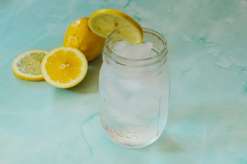

Lemonade
Home

Description
This refreshing Lemonade is a quick and vibrant citrus drink made with fresh organic lemons.
Perfectly balanced and served over ice, it’s a crisp, natural classic that provides the ultimate cooling experience.
Ingredients
- 2 organic lemons, quartered and seeded
- 6 cups cold water, divided
- 3/4 cup granulated sugar
- 2 cups ice
Steps
- Prep the ingredients: Gather the lemons, sugar, water, and ice before you begin.
- Blend the base: Combine the lemon wedges, sugar, and 4 cups of water in a blender. Process for 1 to 2 minutes until the mixture is completely smooth.
- Strain the liquid: Pour the blended mixture through a fine-mesh strainer into a pitcher to remove the pulp and discard the solids.
- Cool and dilute: Stir in the ice and the remaining 2 cups of water. Mix well and serve chilled.